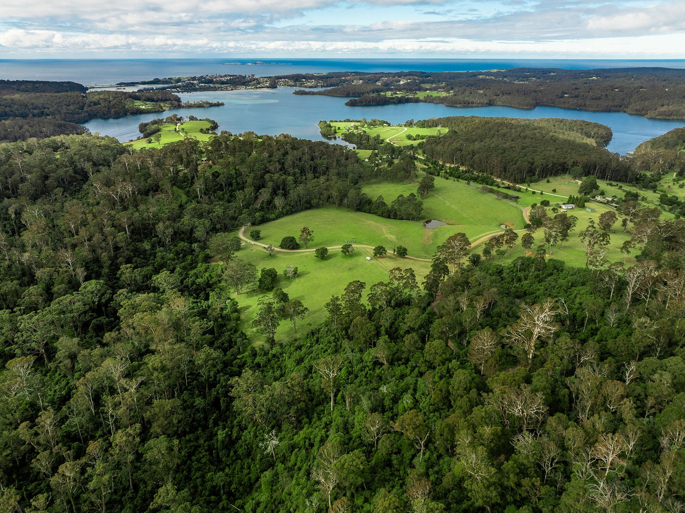
The Shucker Shack
A restored 1960s caravan and annex for two, on 108 acres of farm and rainforest above Wagonga Inlet. Four minutes from Narooma's main street.
Shuck the shack
A 1960s van and annex, restored for two.
From the outside it's a 1960s van with a timber annex, sitting on the grass above the water.
Inside: a double bed, a kitchenette with a Nespresso machine, a lounge with a TV and its own little bathroom.
Out front: a patio with a gas barbecue, two chairs and a fire pit. Wood is supplied, and they'll light it for you.
Keep scrolling to open it.
Small, warm, all yours
The van and annex are fully self contained and sit apart from the farmhouse. There's heating, linen supplied, a TV, and no wifi.
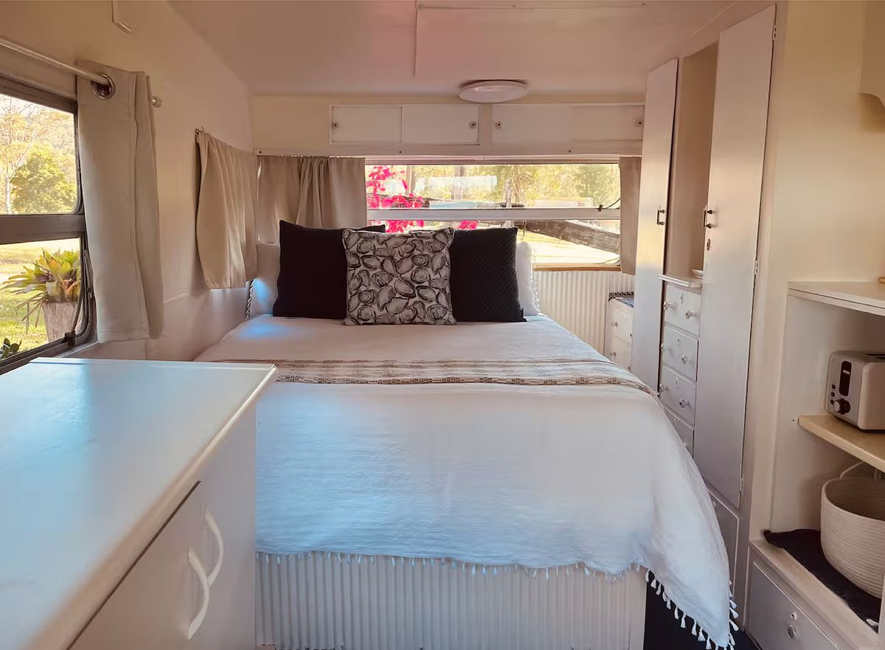
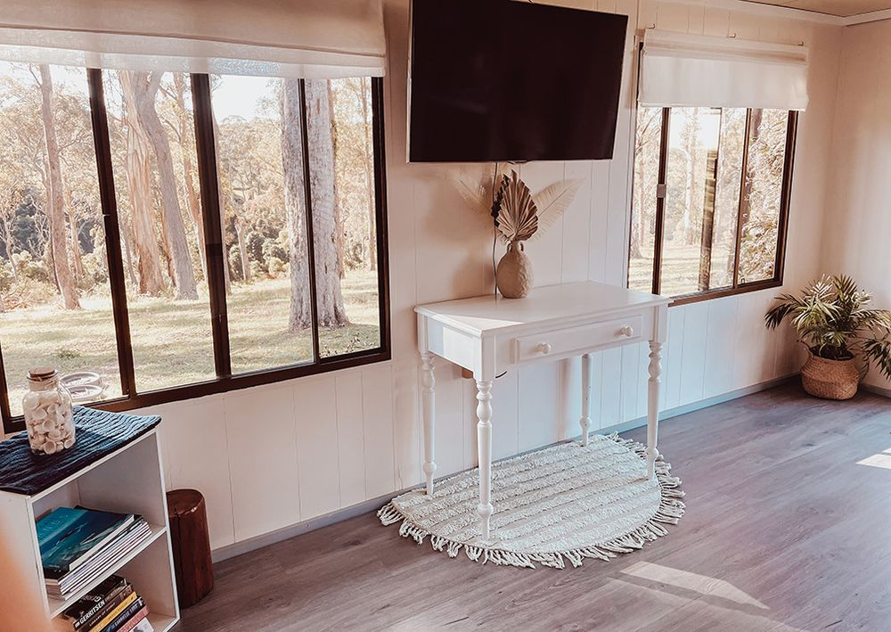
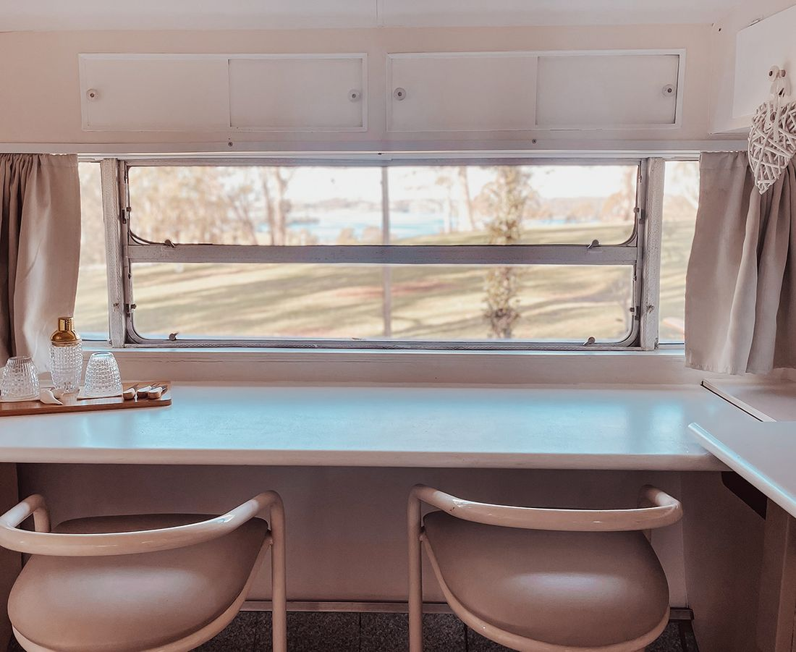
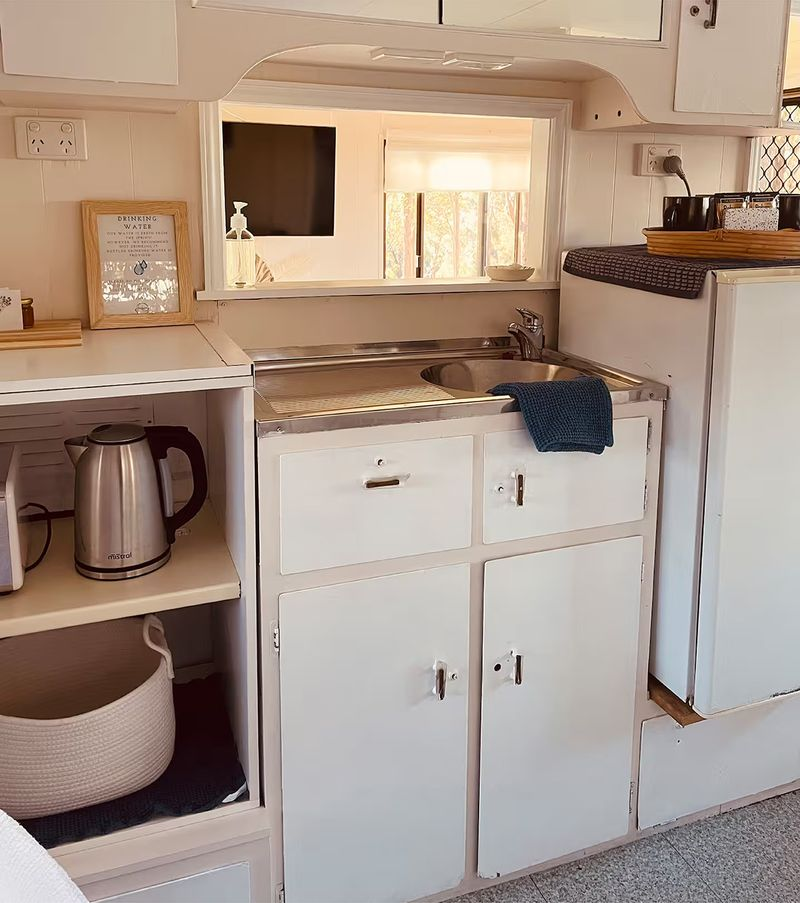
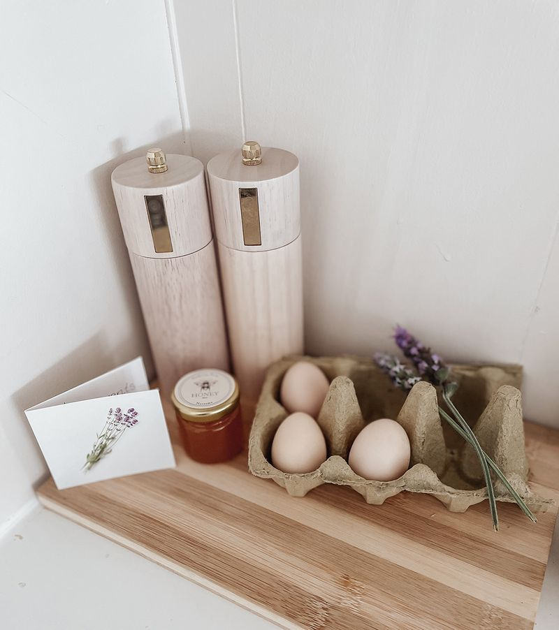
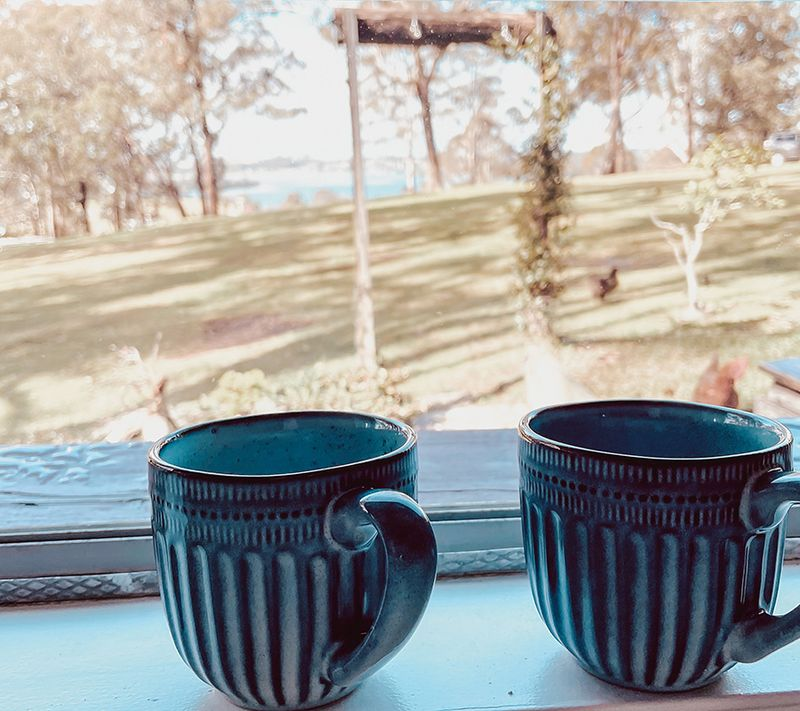
- Sleeps 2, one double bed
- Kitchenette: microwave, bar fridge, toaster, kettle, electric frypan, Nespresso
- Bathroom with shower and toilet
- Outside: patio, gas barbecue, fire pit
- Baskets to buy for breakfast, cheese or s'mores, with 24 hours' notice
- Pets considered on request
108 acres to wander
Six kilometres of walking trails run through paddocks, bush and rainforest down to a natural spring. There are cows, chooks, wallabies, kangaroos, wombats and plenty of birds, and the views run east over the inlet and south to Gulaga.
"West of the bridge no crowding but soft, green-grey bush and paddocks roll to shore."Peggy Norris, original owner of 360 Riverview Road
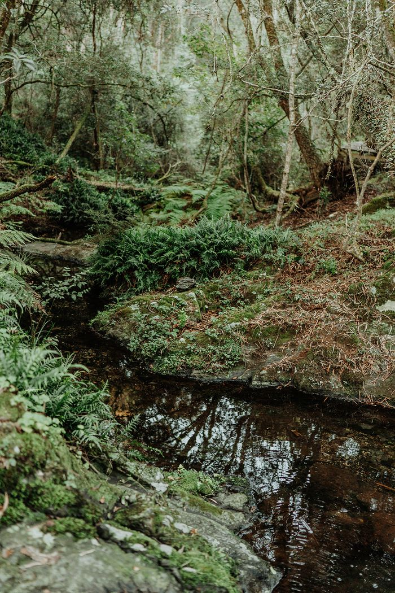
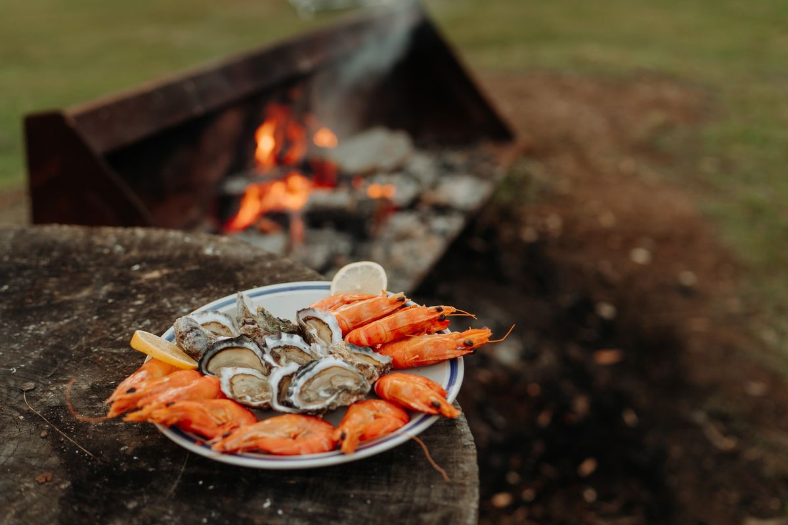
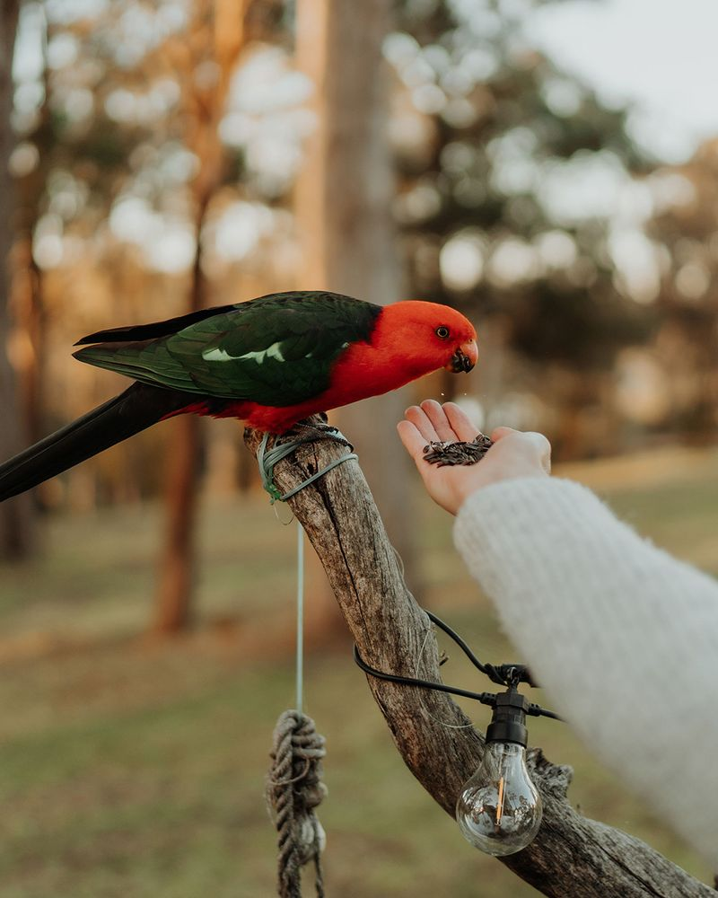
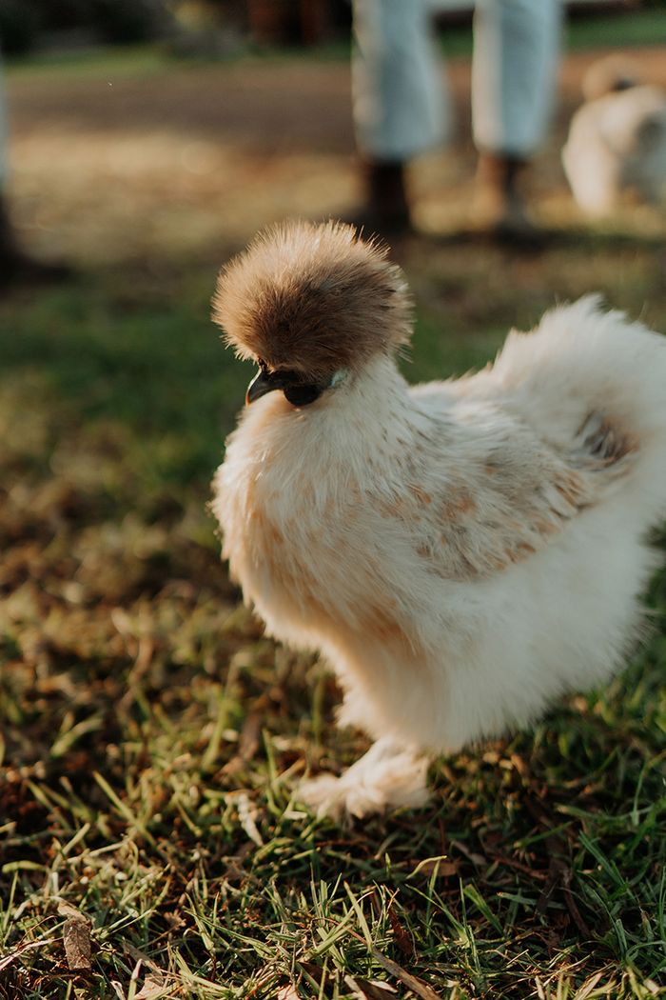
- Collect eggs from the chook shed
- Help feed the cows, on request
- Campfires when there's no fire ban
Close to Narooma
- 3.5 kmto Narooma's main street, about four minutes' drive
- 2 ridgesnorth to the Narooma mountain bike trails
- 218 kmfrom Canberra, under three hours
- 348 kmfrom Sydney, under four and a half hours
- 1 hror less from Moruya Airport
Seals at Australia Rock, whales from September to November, and boat trips to Montague Island.
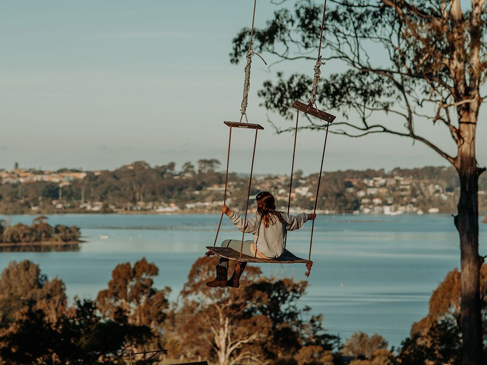
"We loved the unique, creative, cosy space and the view. It is peaceful and quiet too."Sarah, Airbnb, October 2026
"Merri and Brad were very responsive and very inviting. They were also great at providing local recommendations."Rubain, Airbnb, October 2026
"Loved being surrounded by nature and having a campfire in the evening."Mark, Airbnb, October 2026
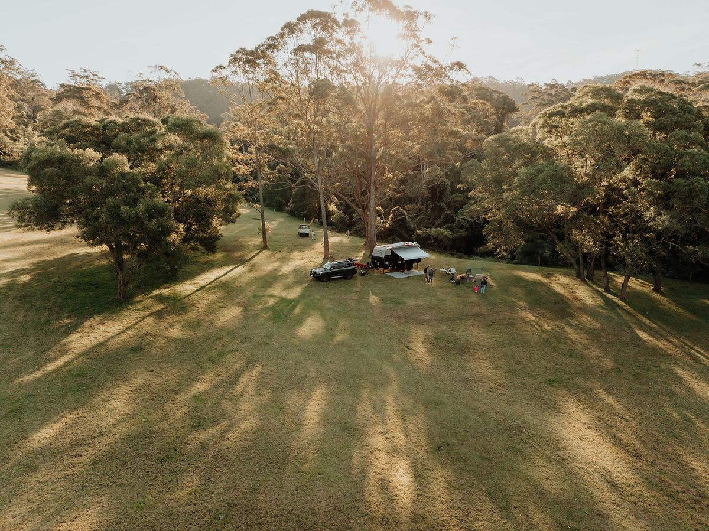
Bringing a tent or a van?
Five campsites on the paddock, with plenty of shade and room. Campers bring their own water and toilet; there's no power. Dogs welcome on request.
Book a campsite on HipcampCheck dates
- The Shucker Shack, for two
- Self contained, apart from the farmhouse
- Fresh eggs (when the hens are laying) and farm honey
- 360 Riverview Road, North Narooma
Or call Merri and Brad on 0450 332 794.
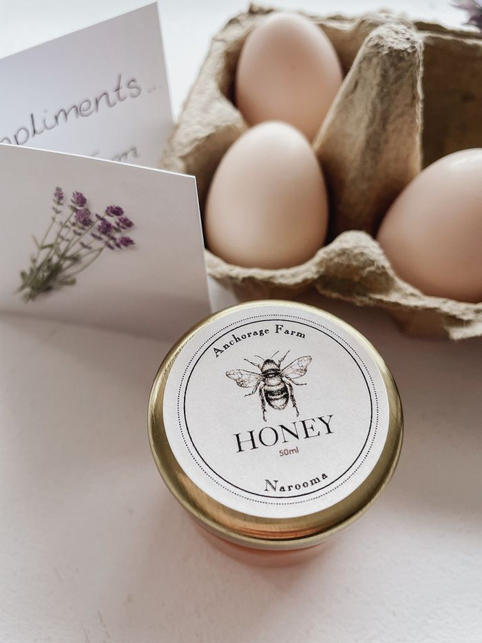